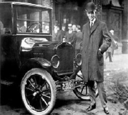
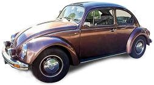

La Ford Model T, conosciuta anche come Tin Lizzie (lucertolina di latta),
Flivver (macinino) o semplicemente Ford T, è una vettura prodotta dalla Ford Motor Company dal 1908 al 1927, una delle più famose vetture della storia
Benvenuto nel mio sito
Ciao, ti piacciono i raduni di auto d'epoca? Allora sei nel posto giusto. Qui potrai visualizzare ed iscriverti a diversi raduni a seconda dei tuoi gusti. Potrai iscrivere anche la tua auto e farla ammirare a tanti collezionisti come te. Ogni raduno è unico, non mancare a nessuno dei miei raduni!
Sarai accompagnato da musica, buffet e tante belle macchine!
